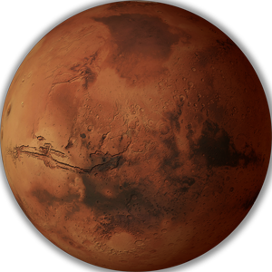

I would like to tell you about each of my favorite planetary destinations when I vacation
| Planetary Destinations | |||
|---|---|---|---|
|
|
 | |
| Earth is where I live. Being that I live here, it's clearly one of my favorites! It's where I call home. | I love mercury because despite being the closest to the sun, it is not the hottest planet. | I love Mars because it has Olympus Mons, a mountain 3x larger than Mount Everest! | I love traveling to Saturn because the rings are made of particles as small as pennies, to as large as mountains! |
|
|
|
Venus is approximately the same size as earth, but a single day on Venus equals a full earth-year. | Uranus is fun and unique becaause it's the planet furthest off its axis. The planet looks tilted! | You HAVE to visit Jupiter at least once. If only because it's the largest planet! | Neptune is great, but watch out for the planets continual storms and even hurricanes. |